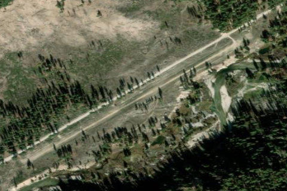

WEATHERBY USFS
52U · ID

Aerial imagery source: Esri, Vantor, Earthstar Geographics, and the GIS User Community
| Identifier | 52U |
|---|---|
| State | ID |
| Runway length | 2,200 ft |
| Runway width | 60 ft |
| Surface | TURF-DIRT |
| Runway | 03/21 |
| Elevation | 4,503 ft |
| Ownership | public |
| CTAF | 122.9 |
| Coordinates | 43.82513888, -115.33136111 |
Notes
[idaho_itd] USFS Airfield [shortfield] Location Overview Weatherby USFS Airport sits about 9 miles northwest of the historic mining town of Atlanta, Idaho, deep in the Boise National Forest backcountry. The airstrip is sandwiched between the Middle Fork Road and the Middle Fork Boise River itself, in a narrow, tree-lined canyon roughly 40 nautical miles northeast of Boise. It serves as a stopover point between the Snake River Plain to the south and the Idaho mountains to the north. Camping & Recreation There are tie-downs at the strip, but no formal camping facilities. Fishing for rainbows can be good off both ends of the airstrip, making it a popular quick stop for anglers flying in for the day. Because it sits right on the river, it's a scenic spot to stretch your legs, wet a line, or just enjoy the backcountry setting before continuing on. Notes & Warnings The strip is turf, roughly 2,200 feet long, oriented 03/21, with landings recommended on Runway 3 and takeoffs on Runway 21 when wind allows. It's normally landed going upriver using a left pattern, though landing downstream out of the canyon above is a fun option when winds permit. The field lies at about 4,500 feet elevation in a confined river canyon, so density altitude, canyon winds, and terrain awareness are important considerations — this is strictly a strip for pilots experienced in mountain and backcountry flying. It doesn't see heavy traffic, likely because it sits along the dusty road to Atlanta, nine miles upstream, but it's usually kept in good condition. CTAF is 122.9. History Weatherby is a U.S. Forest Service–owned airstrip, one of many built in the mid-20th century to support access into Idaho's rugged, roadless backcountry for firefighting, forest management, and recreation. Like its neighbor Atlanta (once a booming gold-mining camp), the strip's location along the Middle Fork Boise River reflects the era when small aircraft became essential lifelines for remote mountain communities and USFS operations. Today it's kept alive mainly by backcountry pilots and organizations like the Idaho Aviation Association, who use and maintain these strips to preserve access to Idaho's wilderness airstrip network — a flying tradition that remains a defining feature of the state's aviation culture.